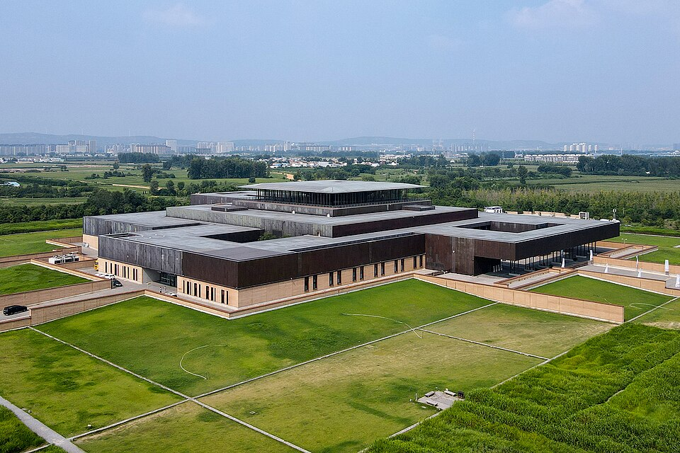
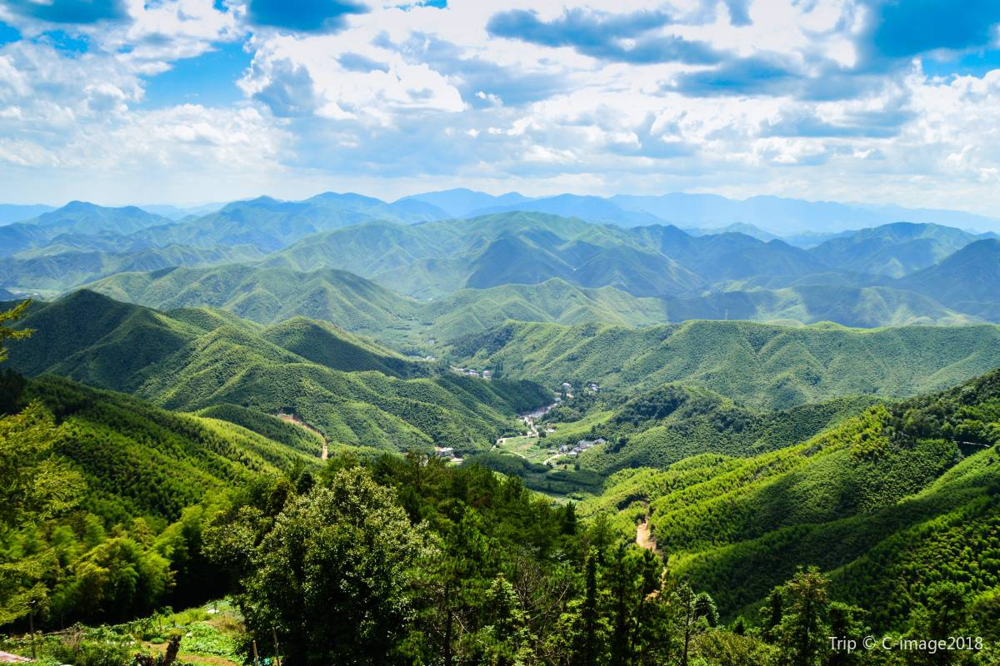
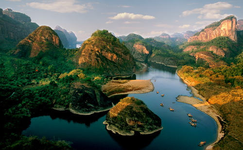

Zhengzhou Travel Blog: Uncover 5,000 Years of Civilization & Hidden Natural Charms



Zhengzhou, the beating heart of Henan Province, is a city where every step feels like a walk through time. As one of China’s earliest capitals—home to the Xia and Shang dynasties—it’s brimming with archaeological treasures, yet it also boasts serene mountains, tranquil lakes, and a food scene that warms the soul. My 4-day trip here wasn’t just about checking off sites; it was about connecting with China’s deep roots: I traced ancient palace ruins where kings once ruled, hiked misty mountain trails where Shaolin monks practice kung fu, and slurped bowls of hearty braised noodles that tasted like generations of tradition.

What surprised me most about Zhengzhou was its balance. One morning, I’d be marveling at 3,000-year-old bronze vessels in a museum; by afternoon, I’d be cycling along a lakeside path with skyscrapers glinting in the distance. Even the food tells a story—from sweet-sour sugarcoated hawthorns sold by street vendors to slow-braised chicken that’s been cooked the same way for centuries. Whether you’re a history buff, a nature lover, or a foodie, Zhengzhou invites you to slow down and soak in its unique blend of old and new.
Below, I’ll share my favorite experiences, essential travel tips, and detailed guides to the three historic sites, three scenic spots, and three must-try foods that made my trip unforgettable.

Travel Tips for Zhengzhou
Best Time to Visit:
Tip 1: Spring (March–May): Mild temperatures (12°C–24°C), blooming peach blossoms on Songshan Mountain, and fewer crowds—ideal for outdoor hikes and ruin explorations.
Tip 2: Autumn (September–November): Crisp air (15°C–26°C), golden foliage in Xingyang Gushan, and clear skies for sunrise views over Songshan.
Tip 3: Avoid Summer (June–August): Sweltering heat (28°C–35°C) and occasional heavy rain; winter (December–February) is cold (0°C–10°C) with occasional smog, better for indoor museums.
Transportation:
Tip 1: Getting to Zhengzhou:
Fly to Zhengzhou Xinzheng International Airport (CGO)—take the Airport Express Train (40 mins, 12 CNY) to downtown, or a taxi (1 hour, ~100 CNY). High-speed trains from Beijing (2.5 hours, ~300 CNY) or Shanghai (5 hours, ~500 CNY) are also convenient.
Tip 2: Getting Around:
Metro: Lines 1–5 cover downtown spots (e.g., Zhengzhou Museum, Longhu Lake); a single ride costs 2–5 CNY.
Buses: Take the "Shaolin Special Line" bus from Zhengzhou Railway Station to Shaolin Temple (2 hours, 25 CNY)—no need to rent a car.
Taxis/Didi: Taxis start at 8 CNY; Didi is cheaper for long trips (e.g., downtown to Shaolin Temple, ~150 CNY one-way).
Essential Tips:
Tip 1: Book Shaolin Kung Fu Tickets Early: The daily kung fu performances (10:00 AM & 3:00 PM) fill up fast—reserve tickets online 1–2 days in advance via the official Shaolin Temple website.
Tip 2: Wear Sturdy Shoes: Historical sites have uneven stone paths, and mountain hikes require grip—sneakers or hiking boots are a must.
Tip 3: Try Street Food Safely: Stick to busy stalls (fresh food = fewer risks) and ask for "less spicy" if you’re sensitive to heat.